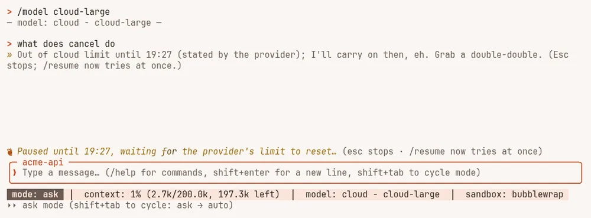
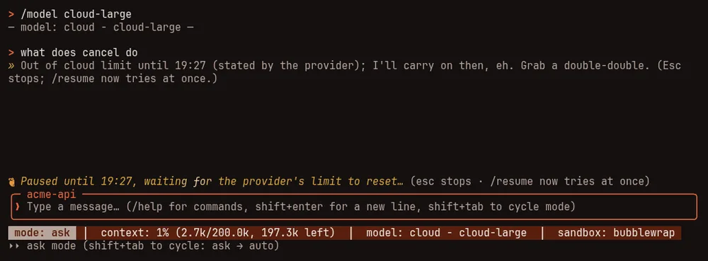
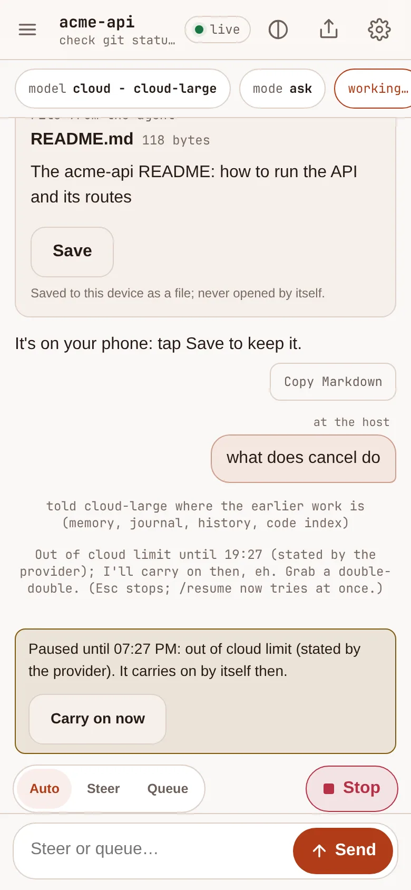
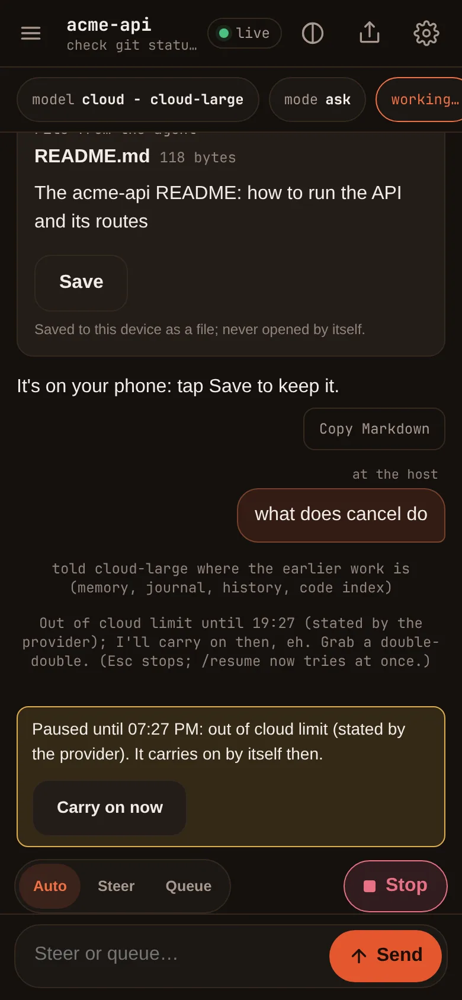

Using the harnessSafety and limits10 min read
When a provider's limit runs out #
On this page
Every cloud account has limits: requests a minute, tokens a minute, a daily quota, a monthly allowance, a credit balance. When every model a request could go to is out of limit, and no fallback is left, Maple does not just give up. The proxy says when the limit lifts, and the harness pauses, waits for the reset, and then carries on where it stopped. Its helper agents pause and carry on too.
In plain words #
- What it is. Out of Anthropic's limit until 05:30? The session says so, waits, and at 05:30 picks the work back up: "Back after the reset, eh." No typing "continue" at dawn.
- Why you want it. A long task does not die halfway through because a rate window filled up. Grab a double-double; the work resumes on its own.
- What it tells you. When the limit lifts, and how sure that time is: stated (the provider gave the time in its answer) or estimated (the provider gave none, so the time comes from its published rule, or from a short backoff). Maple never shows a precise-looking time the provider did not give.
- What to do. Nothing. It is on by default.
Escstops the wait and the turn;/resume nowtries again at once. On your phone, the paused banner has a Carry on now button. - It carries on sooner when it can. Set up a fallback, raise a budget, add a key or switch model while it waits, and it carries on at once with the new route: "A fallback to qwen3 is now set up, so I'm carrying on with it; the reset wait is cancelled."
- What it never does. It never waits forever. A wait longer than six hours (a monthly allowance, say) is put to you first, and a run nobody watches stops with the date instead. A limit that comes straight back is not asked about every second: each later wait is longer, and after three it stops and says so. A goal or a Stop hook that keeps sending the agent back counts with the message that started it, so it cannot wait in a loop either.
What you see #
In the terminal, the transcript says what ran out and until when:
» Out of anthropic limit until 05:30 (stated by the provider); I'll carry on then, eh. Grab a double-double.

Esc stops, /resume now tries at once. A demo setup: the stand-in service always answers that its limit is reached.While it waits, the working line says Paused until 05:30. A helper agent that hit the same limit shows
paused until 05:30 in the lineup (/tasks), waiting, not failed. If your notifications are on, the limit
event tells your desktop or phone once per wait (the provider and the time only). At the reset:
» Back after the reset, eh. The anthropic limit should have lifted: carrying on.The model gets one short note at the end of the conversation, telling it to continue where it stopped and to check that nothing was lost: files, the task list and lineup, half-done edits. Nothing earlier in the conversation changes, so the provider's prompt cache still holds.
Ways the wait ends #
| What happens | What the harness does |
|---|---|
| The reset time comes | Carries on, a few seconds after it (spread out, so a session and its agents do not all ask at once) |
| You set up a fallback, or change the proxy's setup (a budget raised, a key added) | Carries on at once, with the new route |
| The provider's limit clears early (the proxy sees the route open again) | Carries on at once |
You switch model with /model | Carries on at once with that model |
You type /resume now, or tap Carry on now on your phone | Tries at once; if the limit is still there, it waits again |
You press Esc | Stops the wait and the turn |
| You close the harness while it waits | Opening the session again (--resume) carries on after the reset. With resume_closed: durable, a one-time durable job you approved carries on at the reset instead (below) |
If the answer was cut off. A limit can also hit while an answer is streaming. What arrived stays in the conversation, the session waits the same way, and the note at the reset tells the model its last answer was cut off, so it picks up from there instead of starting over.
On your phone #
While the session (or one of its helper agents) waits, the remote page shows a banner: Paused until 05:30: out
of anthropic limit (stated by the provider). On a device that drives the session, Carry on now tries at once,
as /resume now does. A watch-only device sees the banner without the button; a shared link sees only that the
session is paused and until when, not whose limit, and has no button either. A wait longer than
max_reset_wait that is put to you shows up as a card with Wait (pause until the reset) and Stop (end the
turn now).


Other ways to run it #
| How you run it | What happens at a limit |
|---|---|
The full-screen terminal, --repl | Waits and carries on; a long wait is asked about. In --repl, type /resume now while it waits |
--prompt | Stops with exit status 75, unless you pass --wait-for-reset (below) |
--rpc | Waits, and tells the program driving it: a limit_wait event with retry_at. The program can let it wait, send limit_resume to try at once, or abort. A long wait arrives as a permission_request for wait_for_reset: allow waits, deny stops. See Scripting with --rpc |
serve, a2a serve | Waits within max_reset_wait and never asks: a longer wait stops with the date. A phone sees the banner; an A2A task stays working with a status message saying until when (below) |
A new route is handed the conversation the same way as a model you switch to yourself: the new model is told what the harness already holds and which tools reach it, once, and a conversation too long for a smaller model is condensed first. If the new route costs more, the usual cost preview rules apply.
The harness learns about a new route by asking the proxy once every 45 seconds while it waits (one small request),
and at once when you change a setting in /settings. It never polls faster than that.
Settings #
| Setting | Default | What it does |
|---|---|---|
harness. | on | Wait for the reset and carry on. off stops the turn and says when the limit lifts |
harness. | 6h | The longest wait taken on its own. Longer ones are put to you; a run nobody watches stops with the date. 15m, 30m, 1h, 2h, 3h, 6h, 12h or 24h |
harness. | off | Lets a --prompt run wait (within max_reset_wait), as --wait-for-reset does |
| harness.limits.resume_closed | off | What a wait does when you close the harness during it. off: it carries on when you open the session again. durable: when a wait starts, you are offered a one-time durable job that carries on at the reset even while the harness is closed (needs harness.schedule.durable: on; you approve each one, a run nobody watches never installs one, and the job is removed when the wait ends with the harness open) |
All four are in the /settings dialog, under limits, and in config.yaml. The proxy has nothing to set: it
always says when a limit lifts.
Scripts. A --prompt run does not wait unless you pass --wait-for-reset (or turn on
headless_wait_for_reset). Without it, the run stops at once with exit status 75, and --json-summary has a
limit_reset object: at (RFC 3339), basis (stated or estimated), source, provider and reason.
What Maple reads from each provider #
| Provider | What tells Maple when the limit lifts | Basis |
|---|---|---|
| Anthropic | retry-after (seconds) on a 429; else the anthropic-ratelimit-{requests,tokens,input-tokens,output-tokens}-reset time (RFC 3339) of the window that is at 0 | stated |
| Anthropic, monthly spend limit | No time in the answer: the 1st of next month, 00:00 UTC | estimated |
| Anthropic, credit balance with a dollar budget set on the proxy | The start of the budget's next month | estimated |
| OpenAI and OpenAI-compatible servers (Groq and others) | Retry-After; else x-ratelimit-reset-requests / x-ratelimit-reset-tokens (durations such as 6m0s) of the window that is at 0 | stated |
OpenAI, insufficient_quota | Nothing: a prepaid balance does not come back by waiting | none: the turn stops and says so |
| Azure OpenAI | retry-after-ms, then retry-after | stated |
| GitHub Copilot, premium requests or chat allowance | The reset date GitHub gives for the account | stated |
| GitHub Copilot, no date known | The 1st of next month, 00:00 UTC, when GitHub resets premium requests | estimated |
| Gemini API and Vertex AI | Google's RetryInfo retryDelay in the error | stated |
| Gemini, a daily quota with no delay | The next midnight, Pacific time, when Google resets daily quotas | estimated |
Amazon Bedrock (ThrottlingException) and anything else that gives no time | A one-minute backoff | estimated |
| OpenRouter | X-RateLimit-Reset (milliseconds since 1970), or Retry-After | stated |
| A Maple hub above this proxy | The hub's own X-Maple-Retry-At, with its basis | as the hub said |
| This proxy's budgets | The budget's window: 00:00 UTC for a daily one, the period's end for a monthly or rolling one | stated |
| This proxy's rate limits (people, teams, tokens) | When the limit has room again | stated |
| A lifetime budget | Nothing: it does not reset; raise it to go on | none |
| A model on your own machine or network | Local servers have no such limits | none |
Technical details #
The proxy's answer. When every route of a request is refused for a limit, the proxy answers 429 with:
X-Maple-Retry-At: when the earliest of those routes lifts (RFC 3339, UTC, rounded up to the second);X-Maple-Retry-Basis:statedorestimated;X-Maple-Retry-Source: what the time was read from (retry-after,anthropic-ratelimit-tokens-reset,google RetryInfo retryDelay,backoff,maple budget window, ...);Retry-After: the same, in seconds;- in the error body,
maple_retry:at,in_seconds,basis,source,providerandreason.
On the OpenAI-compatible address the error's type is rate_limit_error and its code is rate_limit_exceeded
or insufficient_quota; on the Anthropic-compatible address the type is rate_limit_error. A budget or rate
limit of the proxy's own keeps its own code (budget_exceeded, rate_limited). Before 3.0 a provider's limit
reached clients as a 502; any client that retries a 429 (the OpenAI and Anthropic SDKs, LiteLLM) handles it.
A limit the proxy hits after an answer has started streaming ends the stream with the error and the reset time
where the wire allows it: on the OpenAI-compatible address a last data: chunk {"error": {...}} with
maple_retry (and no [DONE]), on the Anthropic-compatible address an event: error with a rate_limit_error
and maple_retry. Any other failure mid-stream ends the stream as before.
Who is believed. X-Maple-Retry-At and its basis are read only from an upstream that your configuration says
is a Maple proxy (a provider of type maple: a hub or a chain). From any other upstream those headers are
ignored and the provider's own headers decide.
Asking while waiting. GET /v1/maple/capacity?model=<name> (same token as any request) gives, per model,
limit (the limit standing against its own backend, if any: at, basis, source, provider, reason) and
route: ready (whether some route of the model, a fallback included, is open now), the open route's name,
provider, model_id and context_window when it is one of your own models, and waiting, the first reset
when none is open. The answer's config_version is a short fingerprint of the proxy's configuration: it changes
when a fallback, a budget, a provider or a key changes, and is the same on every replica serving the same setup.
Bounds. Every time read from an answer is kept within 35 days; anything later is capped and labelled
estimated, and a time in the past counts as "now". The harness reads at most 35 days ahead too, waits at most
max_reset_wait without asking, waits at most three times per message (the turns a goal or Stop hook asks for
count with it) and six times an hour per session, the second and third at least 1 and 5 minutes,
and resumes early on "route open" only when the proxy said the route was held earlier in the same wait, so a
proxy that never saw the limit (restarted, or another replica) cannot wake it in a loop.
A2A. While a task's turn waits, the task stays working and its status message says so, in words and as
data: {"limitWait": {"until": "<RFC 3339>"}}. A task that stops for a limit fails with
{"limitReset": {"at", "basis", "provider", "reason"}} in its status message.
Central mode. With several proxy replicas (storage.mode: central), which routes are held and until when is
shared through Redis, so every replica answers /v1/maple/capacity the same way.
Known limits. With people configured on the proxy, maple_retry says when, not which account; a held route
that is not one of your own models is not named in waiting. A durable job that carries on a closed session runs
like any durable job: headless, in the sandbox, within harness.schedule's budget, and it stops again if the limit
is still there.
See also #
- Fallbacks and models, to give a limit somewhere to go
- Background agents and the lineup
- Commands, for
/resume now,--wait-for-resetand the exit statuses - Proxy settings, for the headers